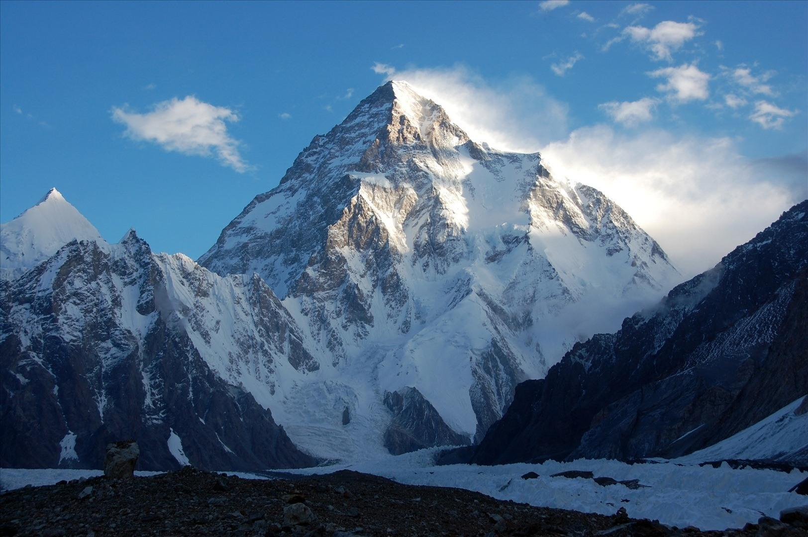
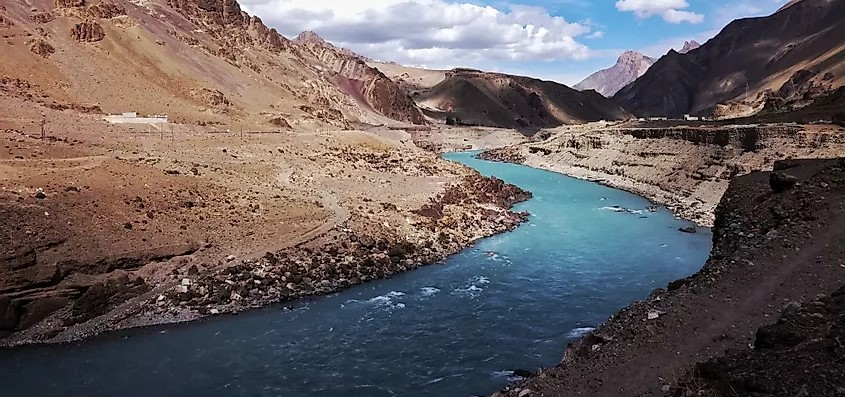
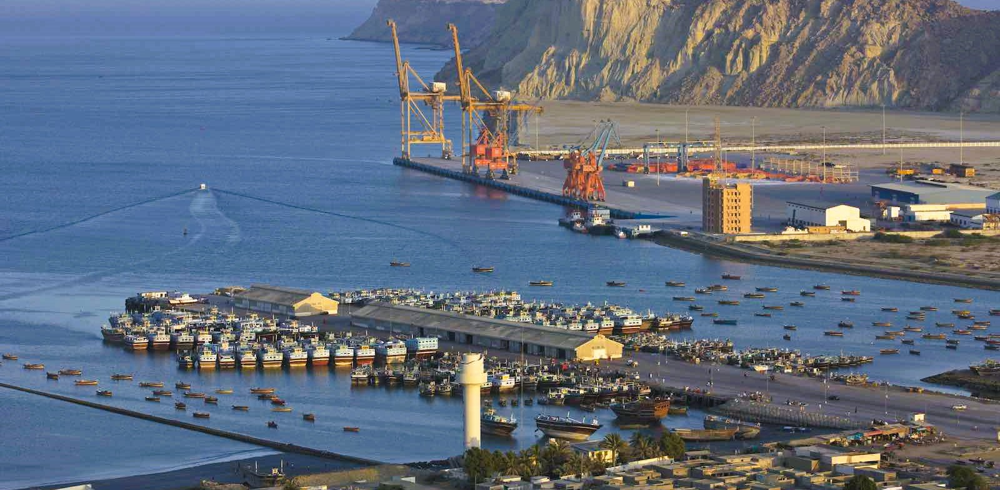
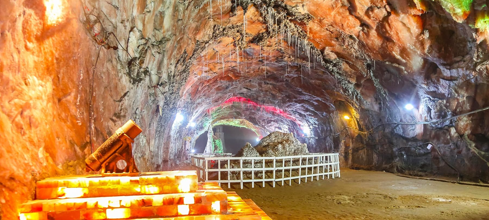
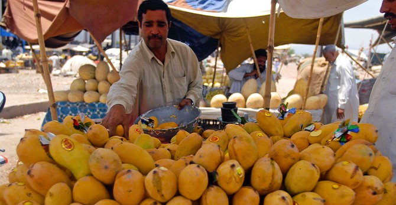
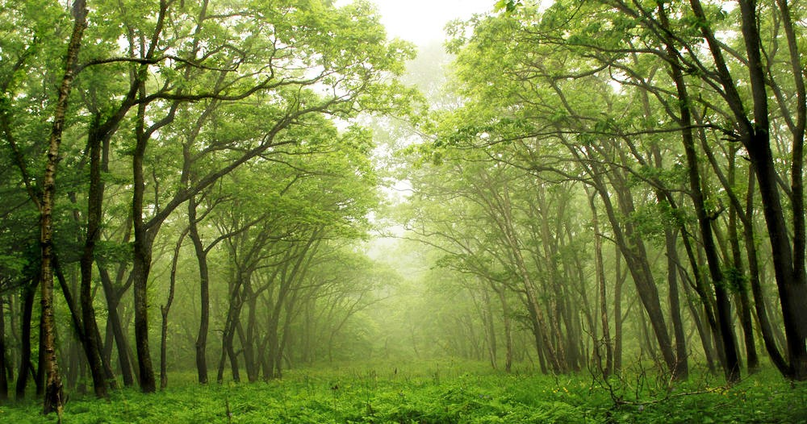

Interesting Facts
- 'Pakistan' is derived from the word 'Pak' - a Persian word meaning pure or clean, and 'istan' - a Hindi word which refers to a land. So… Pakistan means the Pure Land!
- The population is estimated around 251.4 million.
- The 2nd tallest mountain in the world, K2, is in the North of Pakistan.
- Pakistan makes 80% of the world's footballs.
- The Indus River System, which flows through Pakistan, is home to the world's largest contiguous irrigation system.
- Although there are some distinct climatic differences depending on where you are in Pakistan, the climate is generally temperate and consists of 3 seasons: Summer, Winter and Monsoon.
- The Gwador Port, located in the southwestern province of Balochistan, is the world's largest deep-sea port. It is a key part of the China-Pakistan Economic Corridor, a major infrastructure development project.
- The Khewra Salt Mine, located in the Punjab province, is one of the world's largest salt mines.
- The world's first computer virus was produced by two Pakistani brothers in Pakistan and first discovered in 1986.
- Pakistan is known for producing some of the best mangoes in the world. It is the world's 5th largest producer of mangoes.
- The Changa Manga forest, located in the Punjab province, is one of the largest manmade forests in the world. It covers an area of around 12,423 acres and was planted in the late 19th century to combat deforestation.





